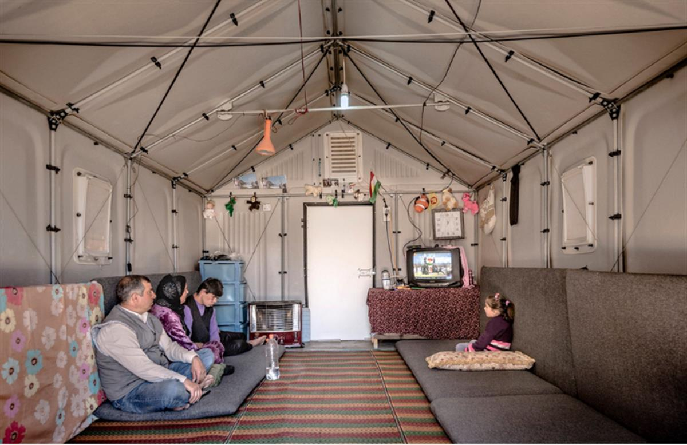
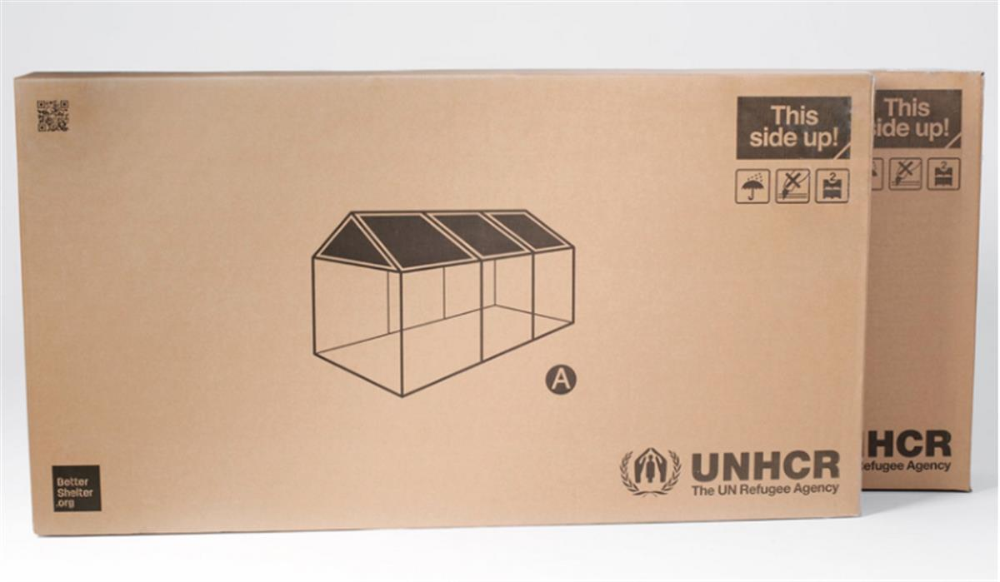
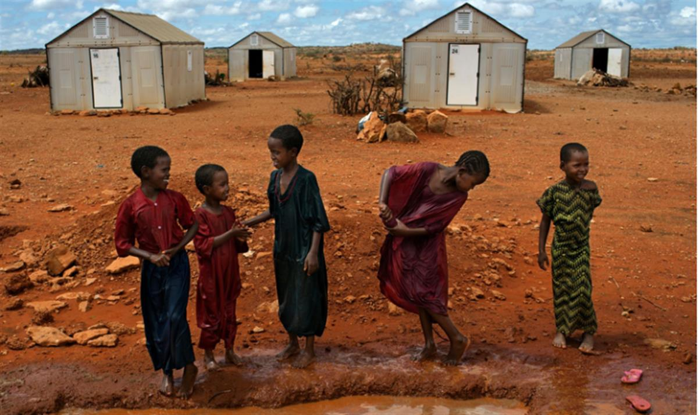

‘It’s a thousand times better’ … Better Shelters at a transit camp on the Greek island of Lesbos in 2015. Photograph: Better Shelter
Ikea’s solar-powered Better Shelter lasts six times longer than a typical emergency tent and has already changed the lives of thousands of refugees around the world
When Hind and Saffa Hameed arrived at the Al Jamea’a refugee camp in Baghdad in 2015, having been hounded from their home in Ramadi by Islamic State militants, they had never been so glad to see an Ikea product. It wasn’t a Billy bookcase or Malm bed – but an entire flat-pack refugee shelter. The Swedish furniture giant’s innovation has just been crowned Beazley design of the year2016 by London’s Design Museum.
“If you compare life in the tents and life in these shelters, it’s a thousand times better,” Saffa, 34, told UNHCR, the UN’s refugee agency. “The tents are like a piece of clothing and they would always move. We lived without any privacy. It was so difficult.”
The family, having been moved from tent to tent, had experienced severe overheating in summer and flooding during Iraq’s rainy season, giving the four young daughters constant diarrhoea. “When the rains came to the camp, the water was about one foot high,” said Hind, 30. “But this shelter is more protected. We have a door we can close and lock. I feel it’s safer and cleaner.”
With years of expertise in squeezing complex items of furniture into the smallest self-assembly package possible, Ikeahas come up with a robust 17.5 sq m shelter that fits inside two boxes and can be assembled by four people in just four hours, following the familiar picture-based instructions – substituting the ubiquitous allen key for a hammer, with no extra tools necessary.

Developed by the not-for-profit Ikea Foundation with UNHCR over the past five years, the Better Shelterconsists of a sturdy steel frame clad with insulated polypropylene panels, along with a solar panel on the roof that provides four hours of electric light, or mobile phone charging via a USB port. Crucially, it is firmly anchored to the ground and the walls are stab-proof, a potentially life-saving feature given that such shelters are often sited where violence is rife and gender-based.
Despite the dramatic increase in the number of people being displaced around the world, with UNHCR estimating there are now 2.6 million refugees who have lived in camps for over five years, and some for more than a generation, the typical flimsy tent hasn’t changed much. Cold in winter and sweltering in summer, tents still rely on canvas, ropes and poles. They generally last about six months, leaking when it rains, and blowing away in strong winds.

At $1,250, a Better Shelter costs twice as much as a typical emergency tent, but it provides security, insulation and durability, and it lasts for at least three years. Beyond that time, when the plastic panels might degrade, the frame can be reused and clad in whatever local materials are to hand, from mud bricks to corrugated iron.
Since production started in June 2015, over 16,000 have been deployed to crisis locations such as Nepal, where Médecins Sans Frontières used them as clinics following the devastating earthquake. Several thousand have been sent to Iraq, and hundreds to Djibouti to house refugees fleeing Yemen.
“It’s almost like playing with Lego,” says Per Heggenes, CEO of the Ikea Foundation. “You can put it together in different ways to make small clinics or temporary schools. A family could also take it apart and take it with them, using the shelter as a framework around which to build with local materials.”
The design, which has been showered with international accolades, is already housed in the permanent collection of the Museum of Modern Artin New York, but the project hasn’t always had an easy ride. It made headlines in 2015 when Zurich ordered 62 to house asylum-seekers, but found it couldn’t use them because they were “fire hazards”.

“The shelters were never designed to meet Swiss fire regulations,” says Märta Terne of Better Shelter, “or to be used indoors as the city proposed. The humanitarian aid world doesn’t adhere to the same safety standards as you would for permanent buildings in Europe made of concrete and stone. But there are strict rules about the distance between shelters and no cooking is allowed inside.”
Dr Tom Corsellis, executive director of NGO Shelter Centre, is impressed, having seen the shelters in action in Iraq and Greece. “Private-sector innovation in the humanitarian world often has a bad name,” he says. “There’s a sense that they keep throwing us gadgets and gizmos we don’t need. But the Better Shelter is a real improvement – from its flexibility to it being the only shelter of its kind you can actually stand up in. It’s big enough for children to do homework in and adults to do some kind of home-based enterprise. It offers a chance for basic, dignified living.”
And Ikea promises the kits come with no missing parts.
SOURCE: THE GUARDIAN